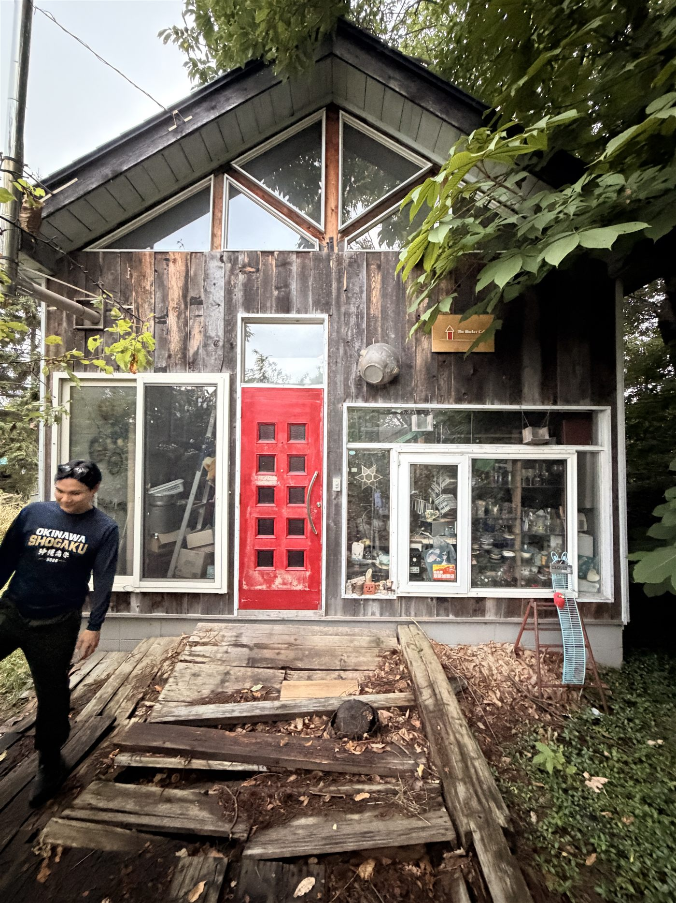
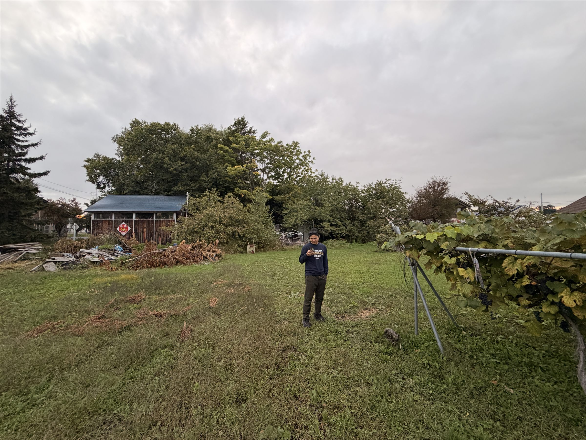
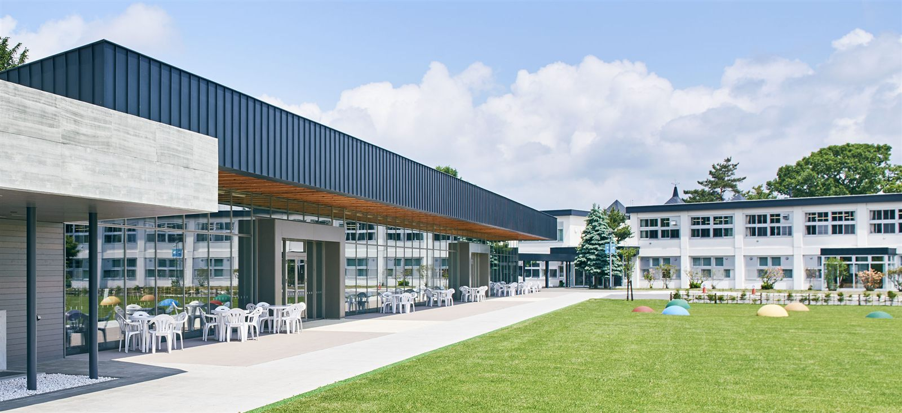
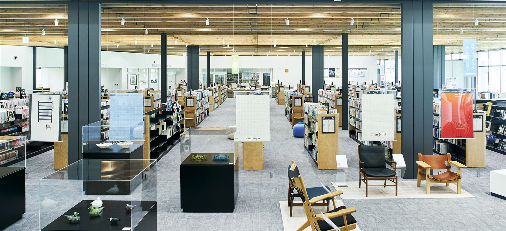
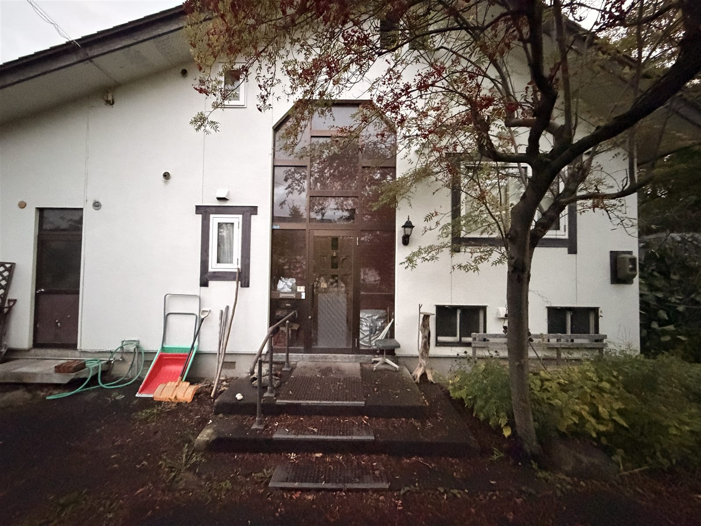

ミュージックバー
→ シェアオフィスとイベントスペースに
かつてバンドが演奏していた店です。ロフトのある建物を改修して、昼は働く場所、夜は音楽や交流の場所として開き直します。
Higashikawa, Hokkaido
町の中心部で、新しい試み ｜ （仮称）東川ライフスタイルヴィレッジ計画

写真の町、東川。旭岳の麓で、地下水とともに暮らすこの町には、過密でも過疎でもない「適疎」という暮らし方に惹かれて、全国からいろんな人が集まってきます。
そのまんなか、公園と木立に囲まれた約1,000坪の土地で、新しい暮らしの場をつくろうとしています。
住む人、働く人、泊まりに来る人、ふらりと立ち寄る人。いろんな背景を持つ人がここで出会い、混ざり合う。そんな場所を、共感してくれる人たちと一緒に育てていきたいと思っています。

東川という町
北海道のほぼまんなか、大雪山国立公園の麓。
人口約8,500人、上水道のない町。
北海道でただひとつ上水道がなく、町の人はみな、大雪山からの地下水で暮らしています。


1985年に「写真の町」を宣言。高校生の写真甲子園や、国際写真フェスティバルが毎年開かれます。
町の東部は大雪山国立公園。北海道最高峰の旭岳（2,291m）に、春夏は登山、冬はパウダースノーを求めて人が訪れます。
蛇口をひねれば、大雪山の雪解け水がしみこんだ地下水。その水で育つお米や野菜も、この町の誇りです。
旭川家具の多くがこの町でつくられています。町で生まれた子どもには、手づくりの椅子が贈られます。
全国で初めての公立日本語学校があり、世界中から学生が集まります。町を歩けば、いろんな言葉が聞こえます。
隈研吾建築都市設計事務所が設計したサテライトオフィス「KAGUの家」や、隈研吾監修の温浴施設「キトウシの森きとろん」が町にあります。
Access
旭川空港から車で13分
旭川駅から車で22分
町には、移住や住まいに関する支援制度・助成金もあります。詳しくは東川町の窓口にお問い合わせください。
町のまんなかに、約1,000坪
隣は公園、敷地には大きな木立。
町の中心部で、これだけの広さがまとまって残っている場所は多くありません。

Life｜生活
Public｜公共施設
Scenery｜景観
残っている2棟を、引き継ぐ
更地から始めるのではなく、
ここにあるものを直すところから始めます。

→ シェアオフィスとイベントスペースに
かつてバンドが演奏していた店です。ロフトのある建物を改修して、昼は働く場所、夜は音楽や交流の場所として開き直します。

→ 改修して、再び暮らしの場に
長く住まわれてきた家を直して、もう一度住まいとして使います。土地の持ち主であるみのりが、ここで暮らします。
私たち有志チーム
海の向こう側から、南の島から、地元から。

海の向こう側から
東川町立日本語学校での短期留学をきっかけに、日本へ移住。いまは東京で不動産開発会社で働きながら、美瑛・東川町を舞台に個人での活動を重ねる。東川に迎えてもらった人が、今度は迎える側になります。

南の島から
沖縄から北海道へ飛び込んだ元小学校教員。いまは美瑛の農家さんとともに畑に立ち、土と人をつなぎながら、この町に関わる人を増やしている。役所との相談から現地の手配まで、現場のことはやまとが動かします。
地元から
東川で暮らし、この土地で毎日を過ごしています。大きな木立も広い庭も、ふつうに売って区切るのはもったいない。同世代の仲間と一緒に住んで、お店を開いて、遊んで。私の庭が、みんなの通りになる日が楽しみです。
Makers｜つくり手
Supporters｜応援してくれる人
ここでつくるもの


配置計画図をもとに描いた鳥瞰図です。敷地配置計画図（スケール1/300、敷地面積 約3,300㎡）。 いずれも計画段階のもので、今後変わることがあります。
コミュニティ型の分譲地ふつうの分譲地と同じように、区画を買って家を建てる。
店舗兼用住宅の分譲地お店をつくることを条件に、住まいとお店を一緒に建てる。
旧ミュージックバーを改修したシェアオフィス・コワーキングで、仲間と働く。キッチンカーを置いて商う。店舗兼用住宅で、暮らしのとなりで働く。働き方は、いろいろ。
新しく一棟貸しの宿を建てる。トレーラーハウスを置く。自宅を建てて、その一部でゲストを迎える。泊まる人にとっては、ここでの暮らしを試せる場所に。
それぞれの区画は独立した敷地。そのまんなかを敷地内の通りがつなぎ、木立の下でみんなが一緒に遊べる。ふらりと歩いて、お店に立ち寄り、木陰でひと休み。それが、東川のライフスタイル。
旧ミュージックバーのイベントスペース、敷地内の通り、木立の広場。ふつうの分譲地ではないから、敷地全体がイベント会場になる。イベントに来る、イベントを開く。
クラウドファンディングで、みんなの通りづくりとミュージックバーの再生を支える。できあがったら、ぜひ遊びに来てください。
大切にしたいこと
いまある木立は、みんなの財産として、できるだけ残します。
敷地の中だけで閉じず、町の人も通り抜けられる場所にします。
つくる人と住む人を分けず、一緒に考えて、一緒につくります。
除雪や雪の置き場は、住む人で分担します。
敷地内の通りには車を入れず、歩く人を優先します。
まだ決まっていないこと
決まってから募集するのではなく、
決める前から一緒に考えてくれる人を探しています。
これから
ご連絡
はじめまして、から。
住んでみたい、お店をやってみたい、ちょっと気になる。どんなきっかけでも大丈夫です。進み具合をお知らせしたり、見学会のご案内をお送りします。
ありがとうございます。
近いうちに、こちらからご連絡します。
この計画をつくっているチーム
（仮称）東川ライフスタイルヴィレッジ計画は、美瑛・東川町の地域プロデュースチーム UBAKU が企画・運営しています。
UBAKU のサイトへ →